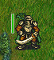

Índice
Lista de Tabelas
- 2.1. Controles e atalhos
- 2.2. Teclas de atalho especificas de unidades e turno.
- 2.3. Whiteboard specific hotkeys
- 2.4. Atalhos específicos para Multijogadores
- 2.5. Atalhos mistos
- 2.6. Atalhos mistos
- 2.7. Controles e teclas de atalho especificas de Pandora
- 2.8. Hora do dia e dano
- 2.9. Bônus de experiência por matar ou lutar com inimigos de níveis diferentes
- 2.10. Círculos
O Battle for Wesnoth é um jogo de estratégia em tempo real com um tema de fantasia.
Recrutar um grande exército, treinando reles recrutas gradualmente em sólidos veteranos. Mais tarde no jogo, convoque seus maiores guerreiros e forme um anfitrião mortal contra o qual ninguém pode! Escolha unidades de um grande número de especialistas, selecionando a dedo uma potência com as forças certas para lutar bem em diferentes terrenos e contra qualquer tipo de oposição.
Wesnoth possui muitas diferentes sagas aguardando para serem jogadas. Você pode lutar com orcs, mortos-vivos e bandidos marchando para o Reino de Wesnoth; lute com os dragões em seus majestosos picos, elfos nas grandes florestas de Aethenwood, anões nos grandes halls de Knalga ou até com sereias na Baía das Pérolas. Você pode lutar para reconquistar o trono de Wesnoth ou usar o poder sombrio dos mortos-vivos para dominar a terra dos mortais ou ainda liderar sua gloriosa tribo orc à vitória contra os humanos que ousarem espoliar suas terras.
Você poderá selecionar dentre mais de duzentos tipos de unidades (infantaria, cavalaria, arqueiros e magos são apenas o começo) e utilizar táticas que vão desde emboscadas utilizando pequenas unidades até confrontos entre vastos exércitos. Você também pode competir com seus amigos - ou estranhos - e lutar épicas batalhas de fantasia.
Battle for Wesnoth é um programa de código aberto e uma florescente comunidade de voluntários cooperam para melhorar o jogo. Você pode criar suas próprias unidades, escrever seus próprios cenários e até mesmo produzir campanhas altamente desenvolvidas. Conteúdo mantido por usuários estão disponíveis em um servidor extra e o melhor deles é incorporado aos lançamentos oficiais do Battle for Wesnoth.
A conhecida porção do Grande Continente, sob o qual Wesnoth se encontra, é comumente dividida em três áreas: as Terras do Norte, geralmente sem lei; o reino de Wesnoth e seu ocasional principado, Elensafar; e o domínio dos Elfos do Sudoeste em Aethenwood e além.
O Reino de Wesnoth situa-se no centro dessa terra. Suas fronteiras são com o Grande Rio no norte, as Colinas Dulatus no leste e sul, parte da floresta de Aethenwood no sudoeste e o oceano à oeste. Elesenfar, outrora província de Wesnoth, é cercada pelo Grande Rio no norte, uma pequena linha da fronteira de Wesnoth no leste, a Baía das Pérolas no sul e o oceano à oeste.
As Terras do Norte são um país selvagem a norte do Grande Rio. Vários tipos de orcs, anões, bárbaros e elfos povoam a região. Para o norte e leste situam-se as florestas de Lintanir, onde o grande reino dos Elfos do Norte mantém seus próprios negócios misteriosos.
Sobre a terra eencontram-se aldeias dispersas onde você pode usar para recuperar tropas e coletar as receitas necessárias para sustentar seu exército. Você também terá que atravessar montanhas e rios, abrir caminho por florestas, colinas e trundas e ainda percorrer planícies abertas. Em cada uma dessas áreas, diferentes criaturas se adaptaram a viver lá e podem viajar mais facilmente e lutar melhor quando estiverem em seu terreno familiar.
No mundo de Wesnoth habitam humanos, elfos, anões, orcs, draconianos, saurianos, sereios, nagas e muitas outras raças ainda mais obscuras e assombrosas. Nas terras amaldiçoadas, caminham mortos-vivos, fantasmas e espectros; e monstros espreitam-se em suas ruínas e cavernas. Cada um se adaptou a terrenos particulares. Humanos habitam principalmente as pradarias temperadas. Nas colinas, montanhas e cavernas subterrâneas, orcs e anões sentem-se em casa. Nas florestas, os elfos reinam supremos. Nos oceanos e rios, dominam sereios e nagas.
Para os propósitos do jogo, os grupos de raças dividem-se em facções; por exemplo: orcs comumente cooperam com trols, e elfos e anões com humanos. Algumas outras facções refletem divisões dentro da sociedade humana — leais e foras-da-lei, por exemplo. Na maioria das campanhas, você controlará unidades de uma única facção. Porém, às vezes, facções fazem alianças com outras e você pode encontrar mais de uma facção em um cenário.
Quando Wesnoth iniciar pela primeira vez, ele mostra uma paisagem de fundo inicial e uma coluna de botões chamados de Menu Principal. Os botões funcionam apenas com um mouse. Para os apressados, uma recomendação: clique no botão "Idioma" para ajustar a sua linguagem; então clique no botão "Tutorial" para iniciar o tutorial; e então jogue a campanha "Uma história de dois irmãos" clicando no botão "Campanha" e selecionando-o da lista disponível.

- Tutorial
- O tutorial é um jogo básico e real que lhe ensina alguns controles fundamentais para se poder jogar. Ganhar ou perder não é importante aqui, mas aprender o que fazer é. Clique no botão Tutorial para jogar. Você joga com o príncipe Konrad ou com a princesa Lisar, aprendendo com o Mago Ancião Delfador - preste atenção ou ele pode lhe transformar num sapo.
- Campanha
- Wesnoth foi primeiro desenvolvido para jogar campanhas. As campanhas são uma série de cenários interconectados. Clique nesse botão para iniciar uma nova campanha. Será apresentada uma lista de campanhas disponíveis no seu computador (outras mais podem ser baixadas se você quiser). Selecione a campanha e clique OK para começar ou Cancelar para sair. Cada campanha tem um nível de dificuldade: fácil, médio (normal) e difícil. Nós recomendamos o médio, já que esse nível é desafiador, porém não difícil. Você pode mudar a dificuldade durante a campanha. Caso você tenha sérios problemas abrindo caminho no nível fácil, o guia sobre estratégia básica certamente lhe ajudará. Uma vez escolhida a dificuldade, você iniciará pelo primeiro cenário da campanha.
- Multijogador
- Clique nesse botão para jogar num único cenário contra um ou mais oponentes. Você pode jogar pela internet ou no seu computador contra oponentes humanos ou de inteligência artificial. Quando você selecionar esse botão, um diálogo aparecerá permitindo-lhe escolher como você quer jogar o cenário. Para aprender mais, veja cenários.
- Continuar
- Clique nesse botão para continuar um jogo anteriormente salvo. Será mostrado um diálogo listando os jogos salvos. Selecione o jogo e clique OK para abrir e continuar, ou Cancelar para retornar ao menu principal. Se você quer selecionar um "jogo replay", você deve marcar a caixa replay. O jogo aberto irá fazer todos os movimentos desde o início enquanto você observa.
- Pegar extras
- Clique nesse botão para entrar no servidor de conteúdo onde um punhado de criações de outros jogadores está hospedado. Dentre as coisas disponíveis estão mais campanhas, eras multijogador (definindo facções para jogos mutijogador) e mapas multijogador. Com o botão "Remover extras", você pode removê-los quando não precisar mais deles.
- Editor de mapa
- Clique nesse botão para iniciar o editor de mapas, onde você pode criar mapas personalizados para jogos multijogadores ou para produzir sua própria campanha.
- Idioma
- Clique nesse botão, selecione seu idioma e clique OK para usá-lo, ou clique Cancelar para continuar com o idioma atual. Na primeira vez que o Wesnoth inicia, seu padrão é o inglês ou o local do seu sistema, se isso puder ser determinado. Porém, uma vez que você o modifica, ele iniciará sempre naquela linguagem.
- Preferências
- Clique aqui para modificar as opções padrão.
- Ver os créditos
- Clique nesse botão para uma lista dos maiores contribuidores do Wesnoth. Você irá frequentemente encontrá-los em tempo real no irc.freenode.org:6667 no canal #wesnoth.
- Sair
- Clique nesse botão para sair do Wesnoth.
- Ajuda
- Clique nesse botão para abrir o sistema de ajuda integrado do jogo. Ele irá provê-lo com informações sobre unidades e outras coisas relevantes do jogo. A maior parte dessas coisas são mencionadas neste manual.
- Próximo
- Clique nesse botão para ler a próxima pequena dica do "Tomo de Wesnoth".
- Anterior
- Clique nesse botão para ler a pequena dica anterior do "Tomo de Wesnoth".
Há duas maneiras básicas de jogar Battle for Wesnoth:
- Jogar uma sequencia de cenários conectados, conhecidos como campanhas, contra o computador.
- Jogar um cenário único contra o computador ou contra oponentes humanos.
Campanhas são sequências de batalhas conectadas e unidas por uma história. Campanhas típicas possuem entre 10 e 20 cenários. A maior vantagem das campanhas é que elas lhe permitem desenvolver seu exército. Assim que você completar um cenário, as unidades remanescentes são salvas para você usá-las no próximo cenário. Se você escolher não usar uma unidade durante um cenário, ela é levada para o próximo. Assim, você não perde as unidades que não usa.
A campanha é a forma primária pela qual Wesnoth foi designado para se jogar, é a provavelmente mais divertida e é a forma recomendada para novos jogadores aprenderem o jogo.
Um cenário único leva cerca de 30 minutos a 2 horas para serem completados. Esse é o método mais rápido de se jogar, porém suas unidades não são salvas e você não pode usar unidades de campanha. Você pode jogar cenários contra o computador ou contra outros jogadores tanto na internet quanto localmente no seu computador. Cenários são acessados através do botão "Multijogador" no menu principal.
Geralmente, jogos multijogador são jogados contra outros jogadores via internet (você também pode jogar em rede). Todos esses jogos são coordenados através do servidor multijogador do Wesnoth. Jogos multijogador podem levar de 1 hora a 10 horas, dependendo de quantos jogadores há (e do tamanho do mapa). O tempo médio varia entre 3 a 7 horas. Jogos podem ser salvos e continuados quantas vezes você quiser. Então, é possível alguns jogos durarem 1 ou 2 semanas, mesmo que o tempo de jogo seja de apenas algumas horas. Você não pode levar unidades de jogos multijogador de um cenário para o outro. Portanto, aumentar a força de seu exército só é possível dentro daquele cenário.
Há várias opções possíveis quando se clicar no botão "Multijogador":

Esse será seu nome no servidor multijogador. Se você possuir uma conta no fórum do Wesnoth, você pode usar seu nome de usuário e senha para acessar o servidor oficial. Uma caixa de senha irá aparecer se uma senha for requerida para o nome de usuário que você colocar. Você não pode usar um nome registrado sem a senha.
Essa opção conecta você diretamente ao servidor oficial. Você acabará na sala principal onde pode criar seus jogos como quiser e onde vários jogos já estão abertos e onde, talvez, alguns jogadores já estejam esperando para participar de um novo jogo.
Essa opção abre uma caixa de diálogo permitindo a você entrar o endereço da máquina que quer se juntar. Nesse diálogo também há o botão "Ver lista" que mostra uma lista de servidores oficiais que podem ser usados como opção se o servidor principal não estiver atualmente disponível.
Uma lista completa de servidores oficiais e de usuários encontra-se nesse website: servidores multijogador.
Você também pode se unir a servidores hospedados por outro jogador nessa opção de menu. Então se você tem um servidor funcionando em sua rede local, apenas entre com o endereço e o número da porta (padrão: 15000). Se você, por exemplo, quer se conectar a um servidor numa máquina de endereço 192.168.0.10 e a porta padrão, você digitaria: 192.168.0.10:15000
Para poder iniciar um jogo multijogador sem usar um servidor multijogador externo, você mesmo deve iniciar o servidor, que usualmente é chamado wesnothd. Esse programa é automaticamente iniciado em "background" quando selecionar essa opção. Ele será parado uma vez que todos os jogadores deixarem o servidor. Outros jogadores precisam poder conectar à porta 15000 usando TCP para jogar com você no seu servidor. Se você está atrás de um firewall, você provavelmente precisará modificar as opções dele para permitir conexões pela porta 15000 e dizer ao seu firewall para encaminhar dito tráfego para a máquina que hospeda o jogo. Você não precisa fazer alterações no firewall para se unir a jogos hospedados em servidores públicos ou de outra pessoa.
Isso cria um jogo apenas rodando no computador. Você pode usar como jogo local ("hotseat"), onde todos jogam em turnos no mesmo computador. Jogos locais levam aproximadamente o mesmo tempo para jogar que jogos pela internet. Ou você pode jogar um cenário contra oponentes com inteligência artificial (IA). Isso pode ser uma boa forma de se familiarizar com os variados mapas que são usados em jogos multijogador antes de jogar contra adversários reais. Ele também pode ser usado como uma simples maneira de explorar as capacidades das unidades de diferentes facções escolhendo qual facção você jogará e qual facção seu oponente usará nesses jogos. Claro, você pode misturar ambas as formas em um jogo, ou seja, jogar junto com amigos contra adversários IA.

Indiferente se você está jogando um cenário ou uma campanha, o formato básico da tela do jogo é o mesmo. A maior parte da tela é preenchida com um mapa que mostra toda a ação que toma conta do jogo. Ao redor do mapa há vários elementos que provêm informações úteis sobre o jogo e elas estão descritas com mais detalhes abaixo.

Através do topo da tela, da esquerda para a direita, encontram-se os seguintes itens:
- Botão de menu
- Botão de ação
- Contador de turnos (turno atual/máximo número de turnos)
- Seu ouro
- Aldeias (suas aldeias/número total de aldeias)
- Suas unidades totais
- Sua manutenção
- Sua receita
- Tempo atual ou tempo restante (em jogos multijogador cronometrados)
- Posição do hexágono atual (coordenada x, coordenada y)
- Defesa e movimento da atual unidade selecionada no hexágono marcado
- Tipo de hexágono atual

À direita da tela, do topo para baixo estão:
- Mapa inteiro, escalado
- Indicador de hora do dia
- Perfil da unidade da última unidade elecionada
- Botão terminar turno
Quando você inicia um cenário ou campanha pela primeira vez, você tem poucas unidades no mapa. Uma dessas será o seu comandante (identificado com um pequeno ícone dourado de coroa). Seu comandante é geralmente posto em um castelo, num hexágono especial denominado fortaleza. Sempre que seu comandante estiver numa fortaleza (não apenas a sua própria, como também a fortaleza de qualquer castelo inimigo que você capturar) e possuir ouro suficiente, você poderá recrutar unidades para o seu exército. Cenários mais tarde, você pode convocar unidades experientes que sobreviveram a cenários anteriores. Daqui, você pode começar a construir seu exército para conquistar o inimigo.
A primeira coisa que você provavelmente vai querer é recrutar sua primeira
unidade. Pressione Ctrl-R (ou clique com o botão direito
do mouse em um hexágono de castelo e selecione "Recrutar") e você poderá
recrutar uma unidade de uma lista de todas as unidades disponíveis. Cada
recruta é colocado em um hexágono de castelo vazio. Uma vez que você
preencheu todo o castelo, não poderá mais recrutar outra unidade até que as
unidades saiam de lá. O comandante do seu oponente é similarmente posto em
sua própria fortaleza no castelo e começará a recrutar as tropas dele
— então não fique se 'abestalhando' olhando o cenário, há uma batalha
a ser vencida.
No fim de cada cenário bem sucedido, todas as suas tropas sobreviventes são automaticamente salvas. No início do próximo cenário, você pode convocá-las numa forma similar ao recrutamento. Tropas convocadas são frequentemente mais experientes que recrutas e usualmente são uma escolha melhor.
Todos os tipos de jogos usam os mesmos soldados, chamados unidades. Cada unidade é identificada pela raça, nível e classe. Cada unidade tem sua força e fraqueza baseada em suas resistências, terreno atual e nível. Maiores detalhes encontram-se na ajuda do jogo.
Enquanto suas tropas ganham experiência em batalha, eles irão aprender mais técnicas e ficam mais fortes. Eles também irão morrer em batalha, portanto você precisará recrutar e convocar mais unidades quando isso acontecer. Mas escolha sabiamente, pois cada um tem sua força e sua fraqueza que seu astuto oponente irá rapidamente explorar.
Preste bastante atenção à caixa de mensagem dos objetivos no início de cada cenário. Geralmente, você irá atingir a vitória matando todos os líderes inimígos e apenas perderá se seu lider for morto. No entanto, há cenários que possuem outros objetivos - levar seu líder até um ponto designado, por exemplo, ou resgatar alguém, ou resolver um quebra-cabeças, ou aguentar um cerco até certo número de turnos etc.
Quando você vence um cenário, o mapa ficará cinza e o botão Terminar turno mudará para Terminar cenário. Você pode ainda fazer coisas como mudar suas opções de salvamento ou (se estiver num jogo multijogador) bater papo com os outros jogadores antes de pressionar o botão para avançar.
Seu exército não luta de graça. Ele custa ouro para recritar unidades e para mantê-las. Você começa cada cenário com certo ouro trazido de cenários anteriores (muito embora cada cenário garanta que você tenha certo número mínimo de ouro inicial), pode ganhar se atingir seus objetivos mais rapidamente e, durante um cenário, se controlar mais aldeias. Cada aldeia que você controla lhe renderá dois ouros de receita por turno. Quando você começa um cenário, é geralmente muito vantajoso ganhar controle de quantas aldeias você puder para assegurar que você tenha ouro suficiente para financiar a guerra. Você pode ver a quantidade de ouro e a receita atuais no topo da tela, como descrito na seção tela do jogo.
No início de cada cenário, seu jogo é automaticamente salvo. Se você for derrotado, você pode carregá-lo e tentar de novo. Uma vez bem sucedido, você será novamente perguntado para salvar o próximo cenário e jogá-lo. Se você tiver de para de jogar durante um cenário, você pode salvar no seu turno e carregá-lo mais tarde. Lembre-se, um bom jogador de Battle for Wesnoth nunca precisa salvar o jogo durante um cenário. Entretanto, a maioria dos iniciantes tendem a fazer isso frequentemente.
These are the default control keys. Key setup might differ depending on the platform used. For example you will often have to use the command key instead of the control key when you are using MacOSX. You can change most hotkeys to your taste using the Preferences menu.
Tabela 2.1. Controles e atalhos
| F1 | Ajuda do Battle for Wesnoth |
| Teclas direcionais | Rolar |
| Clique esquerdo do mouse | Seleciona a unidade, move a unidade |
| Clique direito do mouse | Menu de contexto, cancelar |
| Clique do meio do mouse | Centraliza o local apontado |
| Esc | Sai do jogo, sai do menu, cancela mensagem |
| Ctrl-s | Salva o Jogo |
| Ctrl-o | Continua o Jogo |
| Ctrl-p | Vai para o menu preferências |
| Ctrl-q | Sai do jogo |
| Ctrl-f | Alterna tela cheia/modo janela |
| Ctrl-alt-m | Alterna os sons do jogo para mudo |
| + | Aproxima |
| - | Afasta |
| 0 | Ajusta o zoom para o padrão |
| Ctrl-e | Alterar elipses |
| Ctrl-g | Alterna exibição da grade |
| Ctrl-a | Alterna modo de jogo acelerado |
| Segurar Shift | Alterna entre os modos acelerado e normal enquanto pressionado (temporário!) |
| Ctrl-j | Mostra os objetivos do cenário |
| s | Mostra as estatísticas |
| Alt+s | Mostra a janela de estado |
| Alt+u | Mostra lista de unidades |
| l | Move para a unidade líder |
| Shift-s | Atualiza a neblina agora |
Tabela 2.2. Teclas de atalho especificas de unidades e turno.
| Ctrl-r | Recruta unidade |
| Ctrl-alt-r | Repete último recrutamento |
| Alt+r | Convoca unidade |
| Ctrl-n | Renomeia unidade |
| d | Mostra a descrição da unidade selecionada |
| t | Continua o movimento da unidade que por alguma razão foi interrompido |
| u | Desfaz o último movimento (apenas determinados movimentos podem ser desfeitos) |
| r | Refaz movimento |
| n | Auto-circula unidades que ainda possuem movimentos sobrando |
| Shift-n | Auto-circula unidades que ainda possuem movimentos sobrando, em ordem reversa |
| Ctrl-v | Mostra os movimentos inimigos (até onde o inimigo pode se mover no próximo turno) |
| Ctrl-b | Mostra potenciais movimentos do inimigo, se suas unidades não estiverem no mapa |
| 1-7 | Mostra a distância que a unidade selecionada pode se mover naquela quantidade de turnos |
| Espaço | Termina o turno da unidade e auto-circula para a próxima unidade que ainda possui movimentos sobrando |
| Shift+espaço | Faz a unidade atualmente selecionada guardar posição (termina o movimento dela) |
| Ctrl+espaço | Termina o turno desse jogador |
Tabela 2.3. Whiteboard specific hotkeys
| p | Alterar modo de planejamento |
| y | Executa ação planejada |
| h | Deletar ação planejada |
| Page Down | Move ação para baixo na fila |
| Page Up | Move ação para cima na fila |
| Ctrl-y | Executa todas as ações |
| i | Suppose dead |
Tabela 2.4. Atalhos específicos para Multijogadores
| m | Envia mensagem para outro jogador (no modo multijogador) |
| Ctrl-m | Envia mensagem para seus aliados (no modo multijogador) |
| Alt+m | Envia mensagem para todos no jogo (em modo multijogador) |
| Alt+c | Ver log da conversa |
| Ctrl-x | Limpar mensagens |
Tabela 2.5. Atalhos mistos
| Ctrl-c | Limpa letreiros flutuantes |
| / | Procura (encontre letreiros ou unidades por nome) |
| Al+l | Anexa um letreiro a um hexágono de terreno |
| Ctrl-l | Define nome do time |
| : | Modo de comando |
| F5 | Atualiza cache |
| Shift-c | Criar unidade (Debug!) |
| f | Rodar formula de IA |
Algumas teclas no MacOSX precisam mais do que simplesmente substituir o Ctrl pelo Cmd. Aqui vão alguns:
Tabela 2.6. Atalhos mistos
| Cmd+w | Sai do jogo |
| Cmd+. | Vai para o menu preferências |
| Ctrl-F5 | Atualiza cache |
| Option+espaço | Termina o turno desse jogador |
Some hotkeys were changed slightly to make better use of the controls provided by the Pandora. If you are using a Pandora, these keys differ from the lists above:
Tabela 2.7. Controles e teclas de atalho especificas de Pandora
| D-Pad | Rolar |
| Botão de Jogo A | Recruta unidade |
| Botão de Jogo B | Desfaz o último movimento (apenas determinados movimentos podem ser desfeitos) |
| Botão de Jogo X | Auto-circula unidades que ainda possuem movimentos sobrando |
| Botão de Jogo Y | Convoca unidade |
| Alt + Botão de Jogo Y | Mover ação para baixo da fila |
| Alt + Botão de Jogo X | Mover ação para cima da fila |
Each side is given some amount of gold to begin with, and receives 2 gold pieces per turn, plus 2 more gold pieces for every village that side controls. In a campaign, starting gold is a minimum amount defined by the scenario, which is typically lower as the difficulty level increases. In addition you often get a percentage of gold to carry over from the last scenario played. The exact percentage depends on the scenario and is usually displayed as part of the scenario objectives.

O maior uso do ouro é para construir seu exército recrutando novas unidades ou convocando unidades de cenários anteriores em uma campanha. Unidades podem ser recrutadas ou convocadas quando o líder estiver numa fortaleza e o castelo possuir ao menos um hexágono vazio.
- Clique com o botão direito do mouse num hexágono de castelo vazio e selecione Recrutar para recrutar novas unidades da lista apresentada. O custo para recrutar depende da unidade e é geralmente entre 10 e 20 ouros.
- Clique com o botão direito do mouse num hexágono de castelo vazio e selecione Convocar para convocar unidades de cenários anteriores. Convocar custa 20 ouros por unidade. Veja convocando unidades para mais informações.
Cada unidade possui também um custo de manutenção. Esse custo é geralmente igual ao nível da unidade a não ser que a unidade seja "Leal", (veja abaixo). Unidades que não são inicialmente recrutadas - como o líder e aqueles que se juntam voluntariamente - geralmente são leais. A manutenção somente é paga se o total da manutenção for maior que o número de aldeias que aquele lado controla. A manutenção paga é, portanto, a diferença entre o número de aldeias e o custo de manutenção.
Assim, a fórumla para determinar a receita por turno é
2 + villas - máximo(0, vilas mantidas)
onde a manutenção é igual à soma dos níveis de todas as unidades não-leais.
Se o custo de manutenção for maior que o número de aldeias+2, então o lado começa a perder ouro; se é igual, não há receita ganha ou perdida.
Battle for Wesnoth possui centenas de tipos de unidades que são caracterizadas por um rico leque de estatísticas. Adicionalmente, unidades individuais possuem características específicas que as tornam bem diferentes de outras unidades do mesmo tipo. Finalmente, os produtores de campanhas podem adicionar unidades únicas a suas campanhas, expandindo as opções disponíveis para os jogadores.
As estatísticas básicas para a unidade incluem seus pontos de vida (PV), o número de pontos de movimentos, as armas que ela pode usar e os danos que elas causam. Em adição, as unidades possuem outras características como alinhamento e habilidades especiais, que serão descritas abaixo com mais detalhes.
Every unit has an alignment: lawful, neutral, chaotic, or liminal. Alignment affects how units perform at different times of day. Neutral units are unaffected by the time of day. Lawful units do more damage during the day and less at night. Chaotic units do more damage at night and less during the day. Liminal units do less damage during both night and daytime.
As duas fases "dia" e "noite" são diferenciadas como manhã, tarde, noite e madrugada, pelas posições do sol e da lua no gráfico da hora do dia.
The following table shows the effects of different times of the day on the damage dealt by lawful, chaotic, and liminal units:
Tabela 2.8. Hora do dia e dano
| Turno | Imagem | Fase do Dia | Ordeiro | Caótico | Liminal |
|---|---|---|---|---|---|
| 1 |

| Amanhecer | -- | -- | -- |
| 2 |

| Dia (manhã) | +25% | −25% | −25% |
| 3 |

| Dia (tarde) | +25% | −25% | −25% |
| 4 |

| Anoitecer/entardecer | -- | -- | -- |
| 5 |

| Noite (primeira visão) | −25% | +25% | −25% |
| 6 |

| Noite (madrugada) | −25% | +25% | −25% |
| Especial |

| Subsolo | −25% | +25% | −25% |
Lembre-se que alguns cenários situam-se no subsolo, onde sempre é noite!
Por exemplo: considere uma luta entre uma unidade ordeira e uma caótica
quando ambas tem o 12 como dano base. Ao amanhecer e anoitecer, ambas
causarão 12 pontos de dano se elas acertarem. Durante a manhã ou tarde, a
unidade ordeira causará (12 * 1.25), ou seja, 15 pontos
de dano, enquanto a unidade caótica causará (12 * 0.75),
ou seja, 9 pontos. Durante a noite e madrugada, a unidade ordeira causará 9
pontos de dano em comparação aos 15 pontos causados pela unidade caótica.
Se uma unidade neutra equivalente estiver lutando, ela sempre causará 12 pontos de dano, independente da hora.
Unidades possuem características que refletem os aspectos de seus personagens. Características são atribuídas aleatoriamente para as unidades que são criadas. A maioria das unidades possuem duas características.
As características possíveis para a maioria das unidades são as seguintes:
- Inteligente
- Unidades inteligentes requerem 20% menos experiência que o usual para avançar (trolls não possuem essa caracterísica). Unidades inteligentes são muito úteis no início da campanha, já que elas podem avançar para níveis maiores mais rapidamente. Mais tarde, nas campanhas, a inteligência não é tão útil assim porque o Último Nível de Avanço Máximo (UNAM) não é tão significante quanto as mudanças causadas por um avanço de nível. Se você possuir muitas unidades de nível máximo, você pode querer convocar unidades com as características mais úteis.
- Veloz
- Unidades velozes tem 1 ponto extra de movimento, porém 5% menos PV (pontos de vida). Veloz é a característica mais notável, particularmente para unidades mais lentas, como trolls ou infantaria pesada. Unidades velozes frequentemente possuem uma mobilidade melhorada em terrenos acidentados, sendo importante considerá-las ao implantar suas forças. Unidades velozes também não são tão resistentes quanto as unidades sem essa característica e, consequentemente, não tão boas em guardar posições importantes.
- Resistente
- Unidades resistentes possuem 4 PV a mais, mais 1 PV por nível avançado. Unidades resistentes podem ser úteis em todos os estágios de uma campanha e é uma característica útil para quanquer unidade. A resistência é frequentemente mais útil quando ocorre em uma unidade que possui alguma combinação de baixo ponto de vida, boa defesa ou altas resistências. Unidades resistentes são especialmente úteis em guardar posições estratégicas.
- Forte
- Unidades fortes causam 1 dano a mais para cada acerto em combate corpo a corpo e possuem 1 PV a mais. Enquanto úteis para qualquer unidade de combate, ser forte é mais efetivo para unidades com um grande número de ataques, como os soldados élficos. Unidades fortes podem ser muito úteis quando um pouquinho mais de dano extra é tudo o que se precisa para tornar um golpe danoso em um ataque matador.
Há também algumas características que são atribuídas apenas para certas unidades de uma certa raça. São elas:
- Agilidade
- Unidades ágeis causam 1 dano a mais para cada acerto em ataques à distância. Agilidade é uma característica possuída somente pelos elfos. O povo élfico é conhecido por sua graça singular e sua grande facilidade com o arco. Alguns, entretanto, são agraciados com um talento natural que excede o de seus irmãos. Esses elfos inflingem um ponto de dano adicional com cada flecha.
- Vitalidade
- Recordados por sua vitalidade, alguns anões são mais robustos que outros e podem descansar até quando viajam. Unidades com vitalidade possuem 1 PV mais 1 PV por nível a mais que o usual e ainda recuperam os usuais 2 PV por turno que não lutarem. Eles também sofrem um quarto de dano a menos com ataques envenenados.
- Corajoso
- Não sofrem as penalidades de ataque durante sua hora do dia desfavorável (infantaria pesada, necrófago, trolls e corpos ambulantes).
Há também algumas características que não são atribuídas aleatoriamente. Essas caracterísitcas podem ser tanto atribuídas pelo produtor do cenário quanto podem ser atribuídas baseadas no tipo da unidade:
- Leal
- unidades leais não precisam de manutenção. A maioria das unidades incorrem em custos de manutenção ao final do turno, que é igual ao seu nível. Unidades leais não possuem esse custo. Durante as campanhas, certas unidades podem optar em se juntar às forças do jogador por sua própria vontade. Essas unidades são marcadas com a característica leal. Muito embora elas precisem de pagamento para serem convocadas, elas nunca precisarão de manutenção. Isso pode fazer essas unidades serem muito valiosas durante uma longa campanha, quando o ouro é um suprimento escasso. Essa característica nunca é dada às unidades recrutadas, então pode ser burrice dispersar tais unidades ou mandá-las à uma morte tola.
- Morto-vivo
- Unidades morta-vivas são imunes ao veneno; drenar e maldição também não funcionam neles. As unidades morto-vivas geralmente possuem a característica morto-vivo. Já que as unidades morto-vivas são os corpos dos mortos revividos para lutar de novo, os venenos não tem efeito neles. Isso pode torná-los valiosíssimos em lidar com inimigos que usam veneno em seus ataques.
- Mecânico
- Unidades mecânicas não são vivas e, portanto, são imunes a veneno; drenar e a maldição também não funcionam neles. Unidades mecânicas possuem a característica mecânico
Certas unidades possuem ataques especiais. Eles estão aqui listados:
- Ataque por trás
- Quando usado ofensivamente, esse ataque causa dano em dobro se houver um inimigo do alvo no lado oposto ao alvo e se aquela unidade não estiver incapacitada (p. ex. transformada em pedra).
- Frenesi
- Se usado ofensivamente ou defensivamente, esse ataque continua o combate até que um dos combatentes morra ou se 30 rodadas de combate tenham se passado.
- Carga
- Quando usado ofensivamente, esse ataque causa dano em dobro ao alvo. Isso também permite a essa unidade tomar dano dobrado no contra-ataque do alvo.
- Drenar
- Essa unidade drena a energia de unidades vivas, recuperando-se um número de pontos de vida igual a metade do dano que ela causar (arredondado para baixo).
- Iniciativa
- Essa unidade sempre ataca primeiro, mesmo que ela esteja se defendendo.
- Mágico
- Esse ataque sempre tem 70% de chance de acertar, não importando a habilidade defensiva da unidade sendo atacada.
- Atirador
- Quando usado ofensivamente, esse ataque sempre tem pelo menos 60% de chance de acertar.
- Praga
- Quando uma unidade é morta por um ataque de 'praga', ela é substituída por um corpo ambulante pertencente ao mesmo time da unidade que a atacou. Essa habilidade não funciona contra mortos-vivos ou contra unidades em aldeias.
- Veneno
- Esse ataque envenena o alvo. Unidades envenenadas perdem 8 pontos de vida (PV) todo turno até que elas sejam curadas ou até que fiquem só com 1 ponto de vida (PV). O veneno não pode, sozinho, matar uma unidade.
- Lentidão
- Esse ataque deixa o alvo lento até o fim do seu turno. A lentidão corta o dano dos ataques causados pelo alvo pela metade e seu custo de movimento é dobrado. Em uma unidade lenta será mostrado um ícone de caramujo entre as informações da barra lateral quando for ela selecinada.
- Petrificar
- Esse ataque transforma o alvo em pedra. Unidades petrificadas não podem se mover ou atacar.
- Enxame
- O número de golpes desse ataque diminui quando a unidade é ferida. O número de golpes é proporcional à quantidade atual de pontos de vida (PV) que a unidade tem. Por exemplo: uma unidade com 3/4 de seu PV máximo terá 3/4 do número total de golpes.
Algumas unidades possuem habilidades que tanto afetam diretamente outras unidades quanto causam um efeito em como elas interagem umas com as outras. Essas habilidades estão listadas abaixo:
- Emboscada
- Essa unidade pode se esconder na floresta e se manter indetectável pelos inimigos. Unidades inimigas não podem ver essa unidade enquanto estiver na floresta, exceto se eles tiverem unidades próximas a ela. Qualquer inimigo que primeiro descobrir essa unidade imediatamente perde todos os seus movimentos restantes.
- Camuflagem
- Essa unidade pode se esconder em aldeias (com a exceção de aldeias na água) e continuam indetectáveis pelos inimigos, exceto se eles tiverem unidades próximas a ela. Qualquer inimigo que primeiro descobrir essa unidade imediatamente perde todos os seus movimentos restantes.
- Cura
- Um curandeiro pode remover o envenenamento de uma unidade. No entanto, essa unidade não recuperará pontos de vida no turno em que o veneno for removido.
- Medicar +4
- Permite à unidade tratar as feridas de unidades amigas adjacentes no começo de cada turno. Uma unidade tratada por esse curandeiro pode recuperar até 4 pontos de vida (PV) por turno ou não sofrer efeitos de envenenamento no mesmo turno. Uma unidade envenenada não será curada completamente por uma unidade com esta habilidade e precisa procurar uma aldeia ou uma unidade com a habilidade 'curar'.
- Medicar +8
- Essa unidade combina remédios feito de ervas com mágica para recuperar unidades mais rapidamente do que é normalmente possível no campo de batalha. Uma unidade tratada por esse curandeiro pode se recuperar 8 PV por turno ou remover o efeito de veneno naquele turno. Uma unidade não pode ser curada de seu veneno por um curandeiro e precisa procurar a ajuda de uma aldeia ou de uma unidade que possa curá-la.
- Iluminação
- Essa unidade ilumina a área ao seu redor, fazendo unidades ordeiras lutarem melhor e unidades caóticas lutarem pior. Quaisquer unidades adjacentes a essa unidade lutarão como se fosse entardecer, caso seja noite, e como dia, caso seja amanhecer ou entardecer.
- Liderança
- Essa unidade pode liderar aliados adjacentes, fazendo-os lutar melhor. Unidades aliadas adjacentes de nível menor que a unidade com liderança causarão mais dano em batalha. Quando uma unidade do mesmo time, de nível mais baixo, e adjacente a uma unidade com liderança entra em combate, seus ataques causam 25% mais dano.
- Caçador noturno
- A unidade se torna invisível durante a noite. Unidades inimigas não podem vê-la à noite, exceto se houver unidades próximas a ela. Qualquer unidade inimiga que primeiro descobrir essa unidade imediatamente perde todos os seus movimentos restantes.
- Regeneração
- Essa unidade irá se curar 8 pontos de vida (PV) por turno. Se envenenada, removerá o veneno ao invés de se curar.
- Combatente
- Essa unidade é capaz de passar por entre adversários facilmente, ignorando todas as zonas de controle inimigas.
- Posição defensiva
- A resistência dessa unidade é dobrada, até um máximo de 50%, quando estiver se defendendo. Vulnerabilidades não são afetadas.
- Submergir
- Essa unidade pode se esconder nas profundezas da água e se manter escondida de seus inimigos. Unidades inimigas não podem ver essa unidade quando ela está debaixo d'água, exceto se houver unidades inimigas próximas à ela. Qualquer unidade inimiga que encontrar esta unidade imediatamente perde todo o resto de seu movimento.
- Teletransporte
- Essa unidade pode se teletransportar entre duas aldeias amigas usando um de seus movimentos.
Unidades ganham experiência por lutar. Após obter experiência suficiente, elas avançarão um nível e se tornarão mais fortes. A quantidade de experiência adquirida depende do nível da unidade inimiga e do resultado da batalha: se uma unidade mata o seu oponente, ele recebe 8 pontos de experiência por nível do inimigo (4 pontos se o inimigo for de nível 0), enquanto que a unidade que sobrevive a uma batalha sem matar seu oponente recebe 1 ponto de experiência por nível do inimigo. Em outras palavras:
Tabela 2.9. Bônus de experiência por matar ou lutar com inimigos de níveis diferentes
| nível do inimigo | bônus de morte | bônus de luta |
|---|---|---|
| 0 | 4 | 0 |
| 1 | 8 | 1 |
| 2 | 16 | 2 |
| 3 | 24 | 3 |
| 4 | 32 | 4 |
| 5 | 40 | 5 |
| 6 | 48 | 6 |
Após completar um cenário, todas as unidades sobreviventes estarão disponíveis para serem convocadas no próximo cenário. Você não poderá mover ou atacar com aquela unidade no turno em que você a recruta ou a convoca. Uma unidade convocada retém seus níveis, pontos de experiência e (às vezes) itens mágicos adquiridos anteriormente. Ela também inicia com todos os seus pontos de vida recuperados.
Clicando numa unidade, identificam-se todos os lugares que ela pode se mover
no turno atual, escurecendo os hexágonos distantes (pressionando as teclas
numéricas 2-7 irão identificar os hexágonos adicionais que podem ser
alcançados naquele número de turnos de uma maneira similar). Enquanto nesse
modo, mover o cursor sobre um hexágono irá identificar o caminho de sua
unidade tomará em direção ao hexágono, bem como mostrará informações
adicionais de bônus defensivos naquele hexágono e, se levar mais de uma
rodada, o número de turnos que levará até a unidade chegar. Se você não
quiser mover a unidade, esse modo pode ser cancelado selecionando uma
unidade diferente (clicando em uma nova unidade ou usando as teclas
n ou N ou clicando com o botão direito
do mouse (clique de comando em um Mac) em qualquer lugar do mapa. O círculo no topo da barra de energia da unidade povém
uma forma rápida para ver quais das suas unidades já se moveram ou ainda
podem se mover no turno atual.
Se você decidir se mover com a unidade selecionada, clique no hexágono que você quer se mover e sua unidade irá se movimentar em direção àquele espaço. Se você selecionar um destino fora de alcance no turno atual, a unidade irá se mover o máximo que puder no turno atual e entrará no modo ir para. No modo ir para, sua unidade irá continuar se movendo em direção ao seu destino nos turnos subsequentes. Você pode facilmente desfazer movimentos "ir para" no início do seu próximo turno. Você também pode mudar o destino de uma unidade selecionando aquela unidade e escolhendo um novo destino ou clicando na unidade novamente para cancelar o modo ir para.
Mover-se para uma aldeia que é neutra ou que pertence a uma unidade irá tomá-la e irá terminar o movimento dessa unidade.
A maioria das unidades possui uma zona de controle que afeta os hexágonos que suas unidades podem alcançar e o caminho que suas unidades tomam. Essas restrições são automaticamente afetadas em ambos os caminhos que são mostrados por sua unidade, bem como para os hexágonos que podem se mover no turno atual.
Uma zona de controle da unidade se estende até os seis hexágonos imediatamente adjacentes a ela e as unidades que se movem em uma zona de controle são forçadas a parar. Unidades com habilidade combatente ignoram as zonas de controle do inimigo e são capazes de se mover livremente através delas sem serem forçadas a parar. Unidades de nível 0 são consideradas muito débeis para gerar uma zona de controle e todas as unidades podem se mover através dos hexágonos em volta dessas unidades.
No topo da barra de energia mostrada próxima à cada unidade sua está um círculo. Esse circulo é:
Tabela 2.10. Círculos
| Círculo | Imagem | Descrição |
|---|---|---|
| Verde |

| Se você controla a unidade e ela não se moveu nesse turno |
| Amarelo |

| Se você controla a unidade e ela já se moveu nesse turno, mas ainda pode se mover ou atacar |
| Vermelho |

| Se você controla a unidade, mas ela já usou todos os seus movimentos nesse turno |
| Azul |

| Se a unidade é um aliado, você não a controla |
| - |  | Unidades inimigas não têm círculos no topo de suas barras de energia. |
Abaixo de cada unidade, há normalmente uma elipse colorida ou base. A cor identifica o time a que pertence; em campanhas, o jogador humano é vermelho. A cor do time também se mostrará em partes da roupa da unidade ou possívelmente numa insígnia de escudo.
Usualmente, a elipse será um disco sólido. Em unidades de nível 0, você verá uma elipse que tem linhas quebradas. Isso indica que a unidade não possui zona de controle.
Algumas campanhas usam uma base estrelada para indicar líderes e heróis (unidades que são especiais e, por exemplo, não podem morrer no curso do cenário); outras usam um ícone de coroa prateada acima da barra de energia para marcar os heróis. Outras ainda não possuem herói específico para indicar. Cada um (se algum) é usado por mera escolha estilística dos produtores de campanha.
Se você se mover próximo à uma unidade inimiga, você pode atacá-la. Clique na sua unidade que está próxima à unidade inimiga e clique nela para atacar - isso mostrará uma janela com as próximas opções da luta. Cada unidade possui uma ou mais armas com as quais pode atacar. Algumas armas, como as espadas, são armas de ataque corpo a corpo e outras, como o arco, são armas de ataque à distância.
Se você atacar com uma arma de ataque corpo a corpo, o inimigo será capaz de contra-atacar com uma arma de ataque corpo a corpo. Se você atacar com uma arma de ataque à distância, o inimigo será capaz de contra-atacar com arma de ataque à distância. Se um inimigo não tiver uma arma do mesmo tipo que você atacar, eles não poderão contra-atacar, nem causar-lhe qualquer dano nessa luta.
Tipos diferentes de ataques causam diferentes quantidades de dano e um certo número de ataques pode ser feito com cada arma. Por exemplo, um soldado élfico causa 5 pontos de dano com sua espada cada vez que acerta e pode desferir 4 golpes com a espada. Isso é escrito como 5-4, significando 5 danos por acerto e 4 golpes.
Cada unidade tem uma chance de acertar baseada no terreno em que se encontra. Por exemplo, unidades em castelos e aldeias possuem poucas chances de serem acertadas e elfos na floresta também tem uma pequena chance de serem acertados. Para ver a taxa de defesa de uma unidade (p. ex. chance de não acertar) em um terreno, clique na unidade, leve o mouse até o terreno que você está interessado e então a taxa de defesa será mostrada como uma porcentagem na tela de status e também no próprio terreno.
Você pode obter informação adicional, incluindo a chance que o atacante e o defensor podem ser mortos, clicando no botão "cálculo de danos" na janela de batalha.
- Cortante: Armas de corte usadas para fatiar peças de carne do inimigo. Exemplos: adaga, cimitarras, sabres, garras de draconianos.
- Perfurantes: Armas com uma ponta afiada com uma longa haste ou um míssil; usados para perfurar o corpo do inimigo e causar danos em órgãos internos. Exemplos: lanças, piques de infantaria e flechas.
- Impacto: Armas que não possuem nem lâminas nem pontas afiadas, mas são pesadas o bastante para quebrar ossos dos inimigos. Exemplos: maças, bastões, punho de troll.
- Frio: Armas baseadas em mísseis de frio ou gelo. Exemplos: uma onda gelada do feiticeiro aprendiz.
- Fogo: Armas que utilizam fogo para fritar o inimigo como um frango. Exemplo: o sopro de fogo dos draconianos.
- Arcano: Um ataque que afasta os zumbis animados, espectros, outras criaturas morto-vivas e espíritos. Exemplo: um ataque mágico do mago branco.
Cada unidade é mais ou menos vulnerável a diferentes tipos de ataques. 6 porcentagens na descrição da unidade mostram as forças e fraquezas da unidade contra 6 tipos de ataques. Um número de resistência positiva indica que a unidade irá sofrer menos danos daquele tipo de ataque. Um número de resistência negativo indica que a unidade é especificamente vulnerável a esse tipo de ataque.
Exemplos: as escamas dos draconianos os protegem da maioria dos tipos de ataques, exceto de armas perfurantes e de frio. A cavalaria humana é geralmente bem protegida, exceto de armas perfurantes, que são o seu ponto fraco. Mortos-vivos são muito resistentes a armas cortantes e perfurantes, porém muito vulnerável aos ataques de impacto e arcanos.
Utilizar o melhor tipo de ataque contra unidades inimigas substancialmente aumentarão suas chances de matá-las.
Uma unidade pode ser recuperada um máximo de 8 pontos de vida por turno. Uma unidade que não se mova ou lute durante um turno está descansando e recuperará 2 pontos de vida. Pontos de vida recuperados através do descanso são adicionados no topo dos pontos de vida recuperados através de cura. Assim, é possível uma unidade recuperar até 10 pontos de vida por turno.
Há duas básicas maneiras de uma unidade ser recuperada:
- Esperando em uma aldeia. A unidade irá recuperar 8 pontos de vida em cada turno.
- Estando adjacentes à unidades com a habilidade de cura. O número de pontos de vida recuperados é especificado na descrição de habilidade da unidade. Isso varia entre cura +4 e cura +8.
Trolls e Woses possuem a habilidade de curar-se naturalmente através da regeneração. Eles se recuperam 8 pontos de vida em cada turno se estiverem feridos. Note que, em virtude de todas as unidades somente se recuperarem um máximo de 8 pontos de vida por turno, Trolls e Woses não ganham benefícios adicionais por estar em uma aldeia ou próximo a uma unidade de cura.
Alguns ataques podem inflingir danos de veneno na sua unidade. Quando isso acontece, a unidade envenenada irá sofrer 8 pontos de dano em cada turno até ser curada. Veneno pode ser curado esperando em uma aldeia ou estando próximo a uma unidade com a habilidade de cura. Unidades com a habilidade medicar podem apenas prevenir o dano de envenenamento, sem curá-las. Quando o veneno é curado, a unidade não ganha ou perde pontos de vida naquele turno em virtude do envenenamento/cura. Uma unidade não pode ser curada normalmente até que seja curada do envenenamento. Descansar ainda é permitido, embora não diminua substancialmente o efeito do veneno.
Algumas outras dicas sobre cura:
- Uma unidade pode levar vários turnos para ser completamente recuperada.
- Curandeiros (xamãs élficos, druidas élficos, fadas élficas, magos brancos, mago da luz, paladinos) curam todas as unidades feridas envolta delas. Então você pode manter unidades próximas a eles na batalha sem os perder.
- Curandeiros não recuperam unidades inimigas.
- Curandeiros não recuperam a si mesmos, mas veja o próximo ponto.
- Use seus curandeiros em pares para eles poderem curar uns aos outros se necessário.
- Múltiplos curandeiros de diferentes lados aliados podem recuperar a mesma unidade e acelerar a cura.
- Trolls e Woses não regeneram outras unidades.
- Trolls e Woses se curam de veneno assim como as aldeias fazem.
Os seguintes princípios básicos e dicas são feitas para ajudar a iniciar sua carreira como um veterano de batalha de Wesnoth. Os menores exemplos concretos estão de alguma forma atadas à campanha "Herdeiro do Trono".
Não envie unidades feridas à morte certa. Uma vez que uma unidade perca mais da metade de seus pontos de vida (PV), você deve seriamente considerar retroceder para um lugar seguro e deixá-la em uma vila ou aos cuidados de um curandeiro (como os xamãs élficos ou magos brancos). Curandeiros são muito úteis.
Isso é por razões práticas: uma unidade altamente ferida não pode segurar ou matar o inimigo. Durante o ataque e contra-ataque, ela frequentemente irá morrer. Ademais, mandá-la para a morte certa significa que todos os pontos de experiência (PE) coletados são perdidos. Recrutar um substituto pode ser impossível porque o líder não está na fortaleza ou porque os fundos estão acabando. Mesmo que você possa recrutar um substituto, ele geralmente está longe do front de batalha. Então, não desperdice suas unidades.
Como você guarda suas unidades feridas? Elas estão melhor guardadas ficando longe do alcance do adversário. Nenhum inimigo pode atacá-las se eles não puderem se aproximar. A próxima seção sobre zona de controle (ZdC) mostra como restringir a movimentação do inimigo.
No menu de ação, você pode selecionar "mostrar movimento inimigo" para destacar todos os possíveis hexágonos para onde seu adversário pode se mover. Isso toma as zonas de controle em conta. Desse modo, você pode checar se aquela sua unidade moribunda está atrás e não pode ser atacada porquanto o inimigo não pode se aproximar dela.
Quando seus exércitos se encontram, você pode tentar ser o primeiro a atacar. Então tente terminar o seu movimento fora do raio de alcance do inimigo. Ele não pode atacar, mas geralmente ele irá adentrar na sua zona de alcance.
Cada unidade de nível 1 ou superior mantém uma zona de controle (ZdC) cobrindo todos os 6 hexágonos vizinhos. Isso significa que uma vez que o inimigo se mova para um dos seis hexágonos, ele é forçado a parar e sua fase de movimento termina (apenas inimigos com a rara habilidade combatente podem ignorar isso).
Por causa da ZdC, um inimigo não pode escorregar entre duas unidades que estão alinhadas em norte-sul ou em linha diagonal e possuem exatamente 1 ou 2 hexágonos entre eles. Combinando esses pares entre uma longa muralha ou usando-os em diferentes direções, você pode evitar que o inimigo alcance uma unidade ferida atrás. Ele deve derrotar as unidades que impõem a ZdC antes. Se o inimigo puder malmente alcançá-la, até mesmo uma única unidade pode proteger a região por detrás dela.
Alinhando várias unidades diretamente adjacentes ou com ao menos 1 espaço de hexágono entre elas, você pode construir uma poderosa linha defensiva. Note que, como Wesnoth usa hexágonos, uma "linha" não é uma linha reta, mas uma curva em "zigue-zague". A linha norte-sul e as diagnoais são linhas "verdadeiras".
Vindo de um lado, o inimigo pode atacar uma única unidade sua na linha com apenas duas de suas unidades de cada vez. Como uma regra de polegar, uma unidade saudável sem uma fraqueza particular pode suportar um ataque de duas unidades inimigas normais do mesmo nível ou inferior sem ser morta.
Infelizmente, sua linha frequentemente deve se curvar para formar uma fatia ou para se ajustar ao terreno. Nesses pontos de esquina, 3 unidades inimigas podem atacar. Isso também acontece no fim de uma linha, se ela for muito pequena. Use unidades com altos pontos de vida nos terrenos apropriados ou com resistências apropriadas para guardar esses pontos fracos. Esses são os mais comumente mortos. Portanto, use unidades com nenhum ou com poucos pontos de experiência (PE) para esse propósito.
Alinhar suas tropas também evita que o inimigo cerque qualquer uma delas. Por razões de ZdC, uma unidade com um inimigo por detrás dela e um na frente está bloqueada.
Quando uma unidade na linha de frente está muito ferida, você pode movê-la para a segurança por trás da sua linha defensiva. Para segurar a linha, você terá que substituí-la por uma reserva. Portanto, guarde algumas unidades por detrás da linha de frente. Se você possuir curandeiros, unidades feridas na segunda linhas serão rapidamente recuperadas.
Note que suas unidades podem passar através dos hexágonos que contém as suas próprias tropas.
Tente posicionar suas tropas para que elas possam atacar de um hexágono de alta defesa contra um inimigo em um terreno baixo. Dessa forma, os contra-ataques do inimigo terão menos chances de causar dano.
Por exemplo: você pode posicionar seus elfos dentro de uma borda de floresta para atacar orcs que ficam nas pradarias enquanto seus elfos desfrutam da grande defesa das altas florestas.
Avançar e atacar é, obviamente, a parte mais interessante para se atingir uma vitória rápida. Mate ou enfraqueça os inimigos em seu caminho e mova sua linha de defesa para frente. Isso pode ser astuto, pois o inimigo irá revidar no turno dele.
Frequentemente você mandará diversas unidades para um único inimigo para acabar com ele, porém, dessa forma, sua linha defensiva ficará parcialmente quebrada. Talvez isso não importe porque você está fora do alcance do inimigo. Talvez isso importe porque você está apenas tentando enfraquecer um inimigo muito forte e, no próximo turno, ele irá revidar. Talvez aí um cavaleiro possa ser o matador.
Atacar primeiro é uma vantagem porque permite a você escolher qual unidade você atacará. Tire vantagem da fraqueza do inimigo: p. ex. dirija seus ataques à distância contra inimigos que não possuam tais ataques. Tire vantagem da vunerabilidade dos cavaleiros aos ataques perfurantes. Lembre-se, porém, que eles irão revidar no turno deles e você pode pode ter fraquezas que o inimigo pode explorar.
Por exemplo: cavaleiros podem segurar muito bem uma linha contra brutamontes orcs e filhotes troll porque eles possuem algumas resistências contra ataques cortantes e de impacto. Porém, seus cavaleiros podem facilmente morrer contra arqueiros orcs e lanceiros goblins.
Geralmente vale a pena matar definitivamente (ou quase matar) a unidade atacada. Se você não está certo quanto a matar o inimigo em um turno, assegure-se também que sua unidade pode tanto contra-atacar quanto você pode decidir querer perder aquela unidade. Para resistir ao contra-ataque do inimigo no próximo turno, é geralmente sábio atacar numa opção que não permite ao inimigo causar muitos danos, mais do que escolher um ataque que causa mais danos ao inimigo.
Em particular, use suas armas de ataque à distância se o inimigo não possuir tal ataque. A escolha padrão do computador somente vê o maior dano que você pode causar e escolher isso frequentemente resulta nas suas unidades sofrendo mais dano que o necessário.
Remember that Lawful units like humans fight better at daytime, Chaotic units like orcs or undead fight better at night, and Liminal units fight best during the twilight. Ideally you want to first meet the enemy when you are strong and/or he is weak. When the enemy has its strong time, it often pays off to strengthen your lines and hold a favorable defensive position. When its weak time is about to arise, your advance will push forth.
Por exemplo: elfos podem segurar uma floresta durante a investida orc noturna e avançar no nascer do sol. Você pode ainda notar que a IA do computador irá retroceder os orcs dele durante o dia.
Durante o curso de uma campanha, é crítico que vocẽ construa uma força madura. Cenários posteriores irão assumir que você possui unidades de níveis 2 e 3 disponíveis para convocar.
Suas unidades ganham a maior parte dos pontos de experiência (PE) ao matar uma unidade inimiga (8 PE por nível da unidade morta). Como tal, frequentemente faz sentido que suas unidades mais avançadas enfraqueçam o inimigo, mas deixem que as unidades que necessitam de mais PE a matem. Curandeiros em particular são geralmente fracos em combate e geralmente precisam roubar mortes para que possam avançar de nível.
No início (quando você provavelmente não possui unidades de alto nível), tente dar a maioria das mortes para uma pequena parcela útil de suas unidades. Isso irá fazê-las avançar rapidamente para o nível 2 e elas podem, então, ajudar as outras.
Não negligencie o ganho de XP pelo seu líder. Você precisará mantê-lo a salvo, porém, se você mimá-lo demais, ele estará muito fraco para sobreviver a cenários futuros.
Lembre-se, a idéia do jogo é a diversão! Aqui há algumas recomendações do time de desenvolvimento para como atingir a maior diversão do jogo:
- Considere jogar a campanha no nível de dificuldade "médio", especialmente se você já possui experiência em jogos de estratégia. Nós achamos que você achará bem mais recompensador.
- Não sue muito quando perder algumas unidades. A campanha foi feita para acostumar o jogador a perder algumas unidades ao longo do caminho.
- Não abuse de jogos salvos. Tempos atrás, Wesnoth apenas permitia salvar o jogo no fim de um cenário. Salvamentos durante o cenário foram adicionados por conveniência se você precisasse continuar o jogo mais tarde ou para se proteger de falhas do programa. Nós não recomendamos continuar jogos salvos no meio do cenário várias vezes porque seu mago branco continua morrendo. Ao invés disso, aprenda a proteger o seu mago branco e balanceie os riscos! Isso é parte da estratégia.
- Se você precisa continuar um jogo, nós recomendamos voltar ao início do cenário para que você possa escolher uma nova estratégia que funcione, mais do que simplesmente encontrar números aleatórios que o favoreçam.
- Mas lembre-se: o objetivo é se divertir! Você pode ter gostos diferentes dos desenvolvedores, então faça o que gostar mais! Se você gosta de carregar um jogo cada vez que cometer um erro, procure pelo jogo perfeito, onde você nunca perde uma unidade!
- Primeiro leia os objetivos dos cenários. Algumas vezes, você não precisa ter de matar os líderes inimigos; ao invés, poderia ser necessário somente sobreviver a certo número de turnos ou pegar um objeto em particular.
- Olhe o mapa: o terreno, a posição do seu líder e do(s) outro(s) líder(es).
- Então, comece a recrutar unidades. Unidades baratas são úteis para absorver a primeira onda do ataque inimigo; unidades avançadas podem ser trazidas como reforço. Unidades rápidas podem ser usadas como batedoras para explorar o mapa e rapidamente conquistar aldeias.
- Tente capturar e manter o controle do maior número de aldeias possíveis para que a receita continue alta.
- Mantenha unidades em bandos para que o inimigo não possa atacar de muitos lados e para que você possa sobrepujar cada unidade inimiga em números. Ponha suas unidades em uma linha para que o inimigo não possa atacar as suas unidades de mais de dois lados.
- Unidades diferentes possuem diferentes forças e fraquezas dependendo do terreno e de quem eles estão atacando; clique com o botão direito na unidade e selecione "descrição da unidade" para saber mais.
- Você pode usar unidades de menor nível como buchas de canhão, retardando o inimigo. P. ex. você pode usá-las para bloquear inimigos que estão chegando em suas unidades importantes.
- Você pode causar dano a inimigos com unidades avançadas e então matá-los com suas unidades de nível mais baixo - para dá-las mais experiência (e finalmente avançá-las para o próximo nível).
- Quando você possuir um mago branco (avançado de um mago) ou um druida (avançado de um xamã), ponha-os no meio de um círculo de unidades para recuperá-las enquanto elas se movem pelo mapa (xamãs podem fazer isso também, mas não muito bem).
- Perder unidades é esperado, até mesmo as avançadas.
A hora do dia realmente importa:
- unidades ordeiras causam mais dano de dia e menos dano à noite
- unidades caóticas causam mais dano à noite e menos dano de dia
- lembre-se de sempre verificar a hora do dia no lado direito da tela. Planeje-se - pense sobre o que irá acontecer no próximo turno.
- Algumas unidades são resistentes ou vulneráveis a diferentes tipos de ataques. Unidades montadas são fracas contra ataques perfurantes. Ataques de fogo e arcano destroem mortos vivos. Para ver o quanto uma unidade resiste a um tipo de ataque, clique com o botão direito do mouse na unidade, selecione "descrição da unidade" e então selecione "resistência". Isso irá mostrar o quão resistente uma unidade é para os diferentes tipos de ataque.
Uma parte importante para ser bem sucedido em Battle for Wesnoth é manter suas unidades saudáveis. Quando suas unidades sofrerem danos, você pode curá-las movendo-as para as aldeias ou próximo a unidades curandeiras especiais (p. ex. xamãs élficos e magos brancos). Algumas outras unidades que você encontrar, como os trolls, possuem a habilidade de regenerar-se naturalmente.
- Unidades avançadas são necessárias para matar comandantes inimigos rapidamente e para evitar perder muitas unidades.
- Quanto mais rápido você vencer um cenário, mais ouro você consegue; você irá conseguir mais ouro vencendo um cenário mais cedo do que se controlar todas as aldeias do mapa pelo resto dos turnos.
- Matar todos os líderes inimigos geralmente dá vitória instantânea.
- Após cenários massacrantes (onde você é muito castigado), há geralmente cenários "relaxantes", onde você pode facilmente ganhar algum ouro e experiência (unidades avançadas)
- Unidades avançadas têm maior manutenção que unidades mais baixas (1 ouro por nível), unidades leais são exceção.